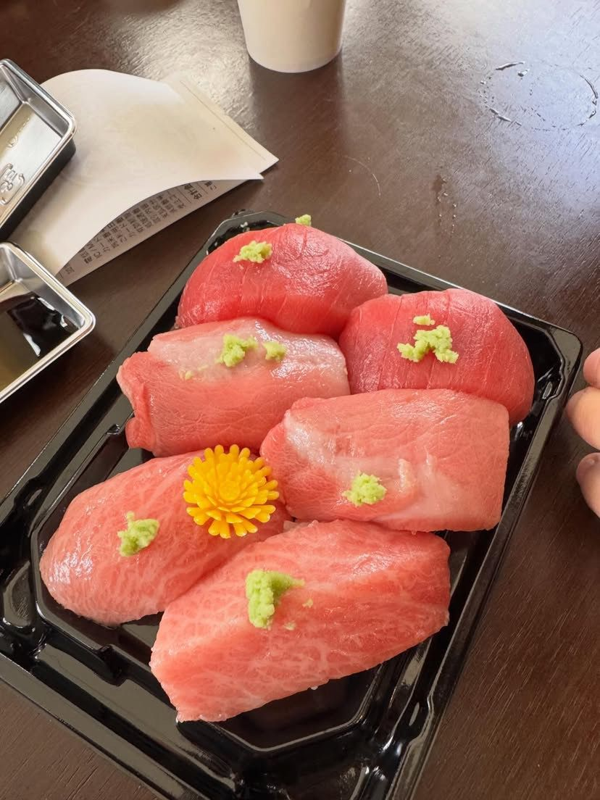

Última atualização: a definir na publicação. Este documento é um modelo-base preparado para a plataforma Barô Shinkai e deve ser revisado por um profissional jurídico antes da publicação final, para adequação a CDC, Marco Civil da Internet e LGPD conforme a operação real do negócio.
Estes Termos de Uso regulam o acesso e uso da plataforma Barô Shinkai ("Plataforma"), incluindo o site, a área do aluno, os conteúdos de mentoria (em vídeo e ao vivo) e os serviços de consultoria gastronômica japonesa oferecidos por Barô Shinkai Sushi ("nós", "nossa equipe"). Ao criar uma conta ou realizar uma compra, você ("aluno" ou "usuário") concorda com estes Termos.
A mentoria é oferecida em dois formatos, com direitos distintos:
O acesso a qualquer conteúdo pago é liberado somente após a confirmação do pagamento pelo provedor de pagamentos utilizado pela Plataforma.
O acesso ao grupo de alunos é exclusivo para quem adquiriu a turma ao vivo e é liberado manualmente pela equipe após a confirmação do pagamento. O ingresso no grupo pode ser solicitado através do botão de contato disponível na plataforma. O uso do grupo deve respeitar o respeito mútuo entre os participantes; comportamento abusivo pode resultar em remoção, sem reembolso da parte referente a esse benefício.
O certificado de conclusão é emitido após a finalização dos requisitos da formação adquirida, nos formatos vídeo ou ao vivo. O brinde (faca) é exclusivo de quem concluir a jornada na modalidade turma ao vivo, sujeito a disponibilidade de estoque e prazos de envio informados pela equipe.
Os pagamentos são processados por um provedor de pagamentos terceirizado. A Plataforma não armazena dados completos de cartão de crédito. Os preços e condições são exibidos ao longo do fluxo de compra e podem variar conforme a formação, o formato (vídeo ou ao vivo) e promoções vigentes.
As condições de cancelamento, reembolso e reagendamento de turmas ao vivo serão detalhadas no momento da compra, respeitando a legislação de defesa do consumidor aplicável, incluindo o direito de arrependimento em compras realizadas online, quando aplicável.
Todo o conteúdo da mentoria — vídeos, materiais, apostilas, metodologia e marca Barô Shinkai — é de propriedade exclusiva de Barô Shinkai Sushi ou de seus licenciantes, sendo proibida a reprodução, distribuição ou uso comercial sem autorização prévia por escrito.
Os serviços de consultoria para restaurantes e negócios são contratados separadamente da mentoria, com escopo, prazos e condições comerciais definidos em contrato específico entre as partes.
Coletamos dados como nome, e-mail, telefone e informações de pagamento (processadas pelo provedor de pagamentos) para viabilizar o cadastro, o acesso aos conteúdos e a comunicação sobre a mentoria e a consultoria. Esses dados não são vendidos a terceiros e são utilizados exclusivamente para a operação da Plataforma, comunicação com o aluno e cumprimento de obrigações legais.
Você pode solicitar a qualquer momento a atualização ou exclusão dos seus dados, dentro dos limites da legislação aplicável, entrando em contato pelos canais oficiais da Barô Shinkai.
Estes Termos podem ser atualizados periodicamente. A versão vigente estará sempre disponível nesta página, com a data da última atualização.
Dúvidas sobre estes Termos podem ser enviadas pelo WhatsApp oficial da Barô Shinkai ou pelos canais de contato disponíveis na Plataforma.